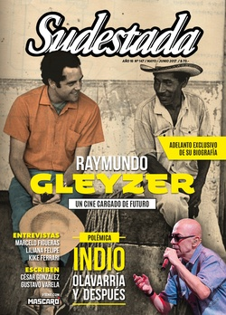

Buscar
Zapatismo. Que retiemble en sus centros la Tierra
El encuentro “L@s Zapatistas y las ConCiencias por la Humanidad” en enero pasado fue una ocasión propicia para acercar la mirada al presente del zapatismo. “¿Científicamente han estudiado que todos sus trabajos, como científicos que son, algún día beneficiarán al pueblo?”, preguntó entonces el ahora Sub Galeano. Pero más allá de los debates y las conclusiones, este 2017 abre sus alas como una etapa determinante para la historia del EZLN: el año en que anunciaron que la próxima candidata en las elecciones presidenciales será una mujer indígena. Desde Chiapas, una cronista de Sudestada viajó por el interior de un caracol y volvió con destellos, miradas y nuevas perspectivas para profundizar.
Edición N° 147
Mayo-Junio 2017
Revista bimensual
Comprar edición impresaSumario
- Raymundo Gleyzer. Un cine cargado de futuro
- Cuando el poder se pone la gorra
- Indio, Olavarría y después
- Colombia. Las FARC desde adentro
- Zapatismo. Que retiemble en sus centros la Tierra
- Marcelo Figueras: "Walsh era la respuesta a todos mis dilemas"
- Liliana Felipe: "El mundo está controlado por la industria alimentaria"
- Kike Ferrari: "Escribimos las historias que nos impactaron cuando éramos pibes"
- Homero, el adelantado
- El aliento del racismo
- Las olvidadas. "Ni una menos" en las cárceles
Compartir Articulo
"Somos los muertos de siempre, muriendo otra vez, pero ahora para vivir", dice el Sub Galeano, recordando al Subcomandante Insurgente Pedro, también fundador del Ejército Zapatista de Liberación Nacional (EZLN), fusilado el 1° de enero de 1994. Es un fragmento del libro 20 y 10. El Fuego y la Palabra, de Gloria Muñoz Ramírez, periodista apasionada que saltó fuera de su pequeño mundo para conocer desde adentro la lucha indígena en el sur de México.
Las patas delgadas del pájaro se sostienen del alambre de la cerca que separa el campamento para Brigadistas Civiles de Observación del resto de la comunidad "La Realidad". Aquí se encuentra uno de los cinco Caracoles del EZLN. Somos, por estos días, cuatro colaboradores del Centro de Derechos Humanos "Fray Bartolomé de las Casas", encargado de proteger, mediante la observación de testigos foráneos, los constantes hostigamientos militares que padecen las comunidades.
Para llegar a "La Realidad", que no son más que cinco por cinco cuadras, hay que cruzar un buen pedazo de selva y da la sensación de aparecer en medio de un vallecito. Durante estos días cocinamos a leña, vamos al baño ecológico que hay en el fondo, dormimos en hamacas, nos bañamos con jabón blanco en el río, igual que las y los zapatistas, y observamos durante todo el día a las mujeres que lavan pilas de ropa a mano y con los pies en el agua. Justo cruzando el pequeño arrollo están la escuela y la clínica que se construyeron en homenaje al compa Galeano, ya que cuando lo mataron a sangre fría estaba trabajando para construir justamente esos dos espacios para el pueblo. El Subcomandante Insurgente Marcos, ahora Sub Galeano, adoptó ese nombre como homenaje y como símbolo de vida, ya que vivos o muertos, la lucha indígena es profunda y eterna.
***
Llegamos el 4 de enero de 2017 luego de participar del Encuentro "L@s Zapatistas y las ConCiencias por la Humanidad", durante los últimos días de 2016.
"La culpa es de la flor", aseguró el Sub Galeano una tarde de diciembre en el salón principal de la Universidad de la Tierra, también conocida como CIDECI (Centro Indígena de Capacitación Integral). A partir de una anécdota, explicó la motivación que tuvieron para encontrarse con científicos de todo el mundo.
"La anécdota me la contó el Subcomandante Insurgente Moisés y se las narro aquí, después de confirmar los detalles con él. El asunto es que una jóvena lo topó al SubMoy y le dijo algo como 'Oí compañero subcomandante, yo tengo una duda a ver si lo puedes resolver'. El SubMoy le respondió algo como 'bueno compañera, dime y si sé, te respondo, y si no, pues vamos a ver cómo le hacemos'. Se veía que la jóvena tenía días y noches con la pregunta rondándole la cabeza, así que la soltó sin titubear: '¿Por qué esa flor es de ese color, por qué tiene esa forma, por qué tiene ese olor?', y siguió 'y no quiero que me responda que la madre tierra con su sabiduría así la hizo a la flor, o que el Dios, o lo que sea. Quiero saber la respuesta científica'. Tan sólo la pregunta y quién la hacía, ya daba para un seminario completo de historia del zapatismo", leyó el Sub Galeano con la boca pegada al pasamontañas, y prosiguió explicando que aquello era un síntoma de los cambios que hay en las comunidades zapatistas.
"La compañera jóvena, a diferencia de su madre y de su abuela cuando tenían la misma edad, ha rechazado dos propuestas matrimoniales ('acaso estoy pensando en marido', fue la idéntica respuesta que recibieron los dos pretendientes que, previamente, se habían vaciado medio frasco de loción y se habían peinado con un gel que les durará siglos)". Describe una adolescente que "habla con fluidez dos lenguas, la materna y la castilla, sabe leer y escribir con una corrección que ya quisieran estudiantes de licenciatura de cierta universidad nacional, ha cursado la primaria y la secundaria autónomas, se desempeña como promotora de salud y Tercio Compa, maneja sin dificultad la computadora y hasta tres sistemas operativos distintos, además de cámaras y programas de edición de video. Era de esperar que no quedara satisfecha con una respuesta de "la madre tierra, con su infinita sabiduría…"...
(La nota completa en la edición gráfica de Sudestada... ¿Por qué publicamos apenas un fragmento de cada artículo? Porque la subsistencia de Sudestada depende en un 100 por ciento de la venta y de la confianza con sus lectores, no recibimos subsidios ni pauta alguna, de modo quela venta directa garantiza que nuestra publicación siga en las calles. Gracias por comprender)
Comentarios
Luz Magali Benasulin
Articulos más vistos


LIBRERÍA SUDESTADA

Colección infantil

Distribuidora de Libros

Suscripción

Sudestada en URUGUAY

Otros articulos de esta edición
 Género
Género
Las olvidadas. "Ni una menos" en las cárceles
El movimiento de mujeres hizo temblar la tierra, pero hay lugares donde todavía no llegó con fuerza. El patriarcado se ...
 Nota de tapa
Nota de tapa
Raymundo Gleyzer. Un cine cargado de futuro
El cine político argentino está marcado por la obra de Raymundo Gleyzer. Sus largometrajes disruptivos, sus cortos vinculados a la ...
 Entrevista
Entrevista
Marcelo Figueras: "Walsh era la respuesta a todos mis dilemas"
En su última novela, El negro corazón del crimen, se propone narrar los inicios de un Rodolfo Walsh diferente, en ...
 Editorial
Editorial
Cuando el poder se pone la gorra
Las imágenes que recorren el país no pueden ser más gráficas. Agentes antidisturbios cada vez más pertrechados, atiborrados de moderno ...
 Musiqueras
Musiqueras
Liliana Felipe: "El mundo está controlado por la industria alimentaria"
La compositora, cantante y pianista cordobesa expande su universo de creaciones feministas y por los derechos de las minorías sexuales ...
Indio, Olavarría y después
Un recital que convoca multitudes. Un músico que camina sobre el filo del mito. Un concierto que puede ser el ...